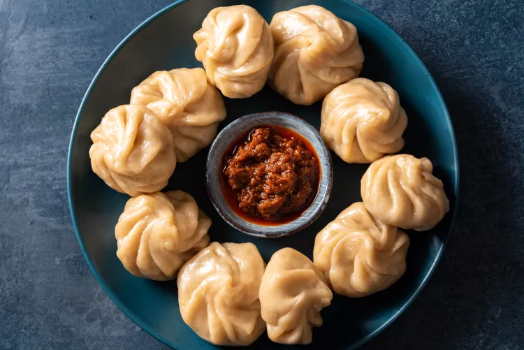

Momo

Momo is a traditional Nepali dumpling filled with juicy meat or
vegetables, wrapped in a soft dough and steamed to perfection. Served
with a spicy tomato achar, it's a favorite comfort food across Nepal.
Ingredients
- 2 cups of flour
- Minced buff/chicken or mixed vegetables
- Finely chopped onion, garlic, and ginger
- 1 teaspoon soy sauce
- Salt, pepper, and spices to taste
Instructions
-
In a bowl, mix flour with water to make a soft dough. Cover and let it
rest for 30 minutes.
-
Prepare the filling by mixing the minced meat or vegetables with
onion, garlic, spices, and soy sauce.
-
Roll out small dough circles, add filling, and fold into dumpling
shapes.
-
Steam the momos in a steamer for 10–12 minutes until cooked through.
🎥Watch the video tutorial:
How to Make Momos at Home
🍽️ Tip: For an authentic experience, serve your momos with homemade
tomato achar (spicy dipping sauce).